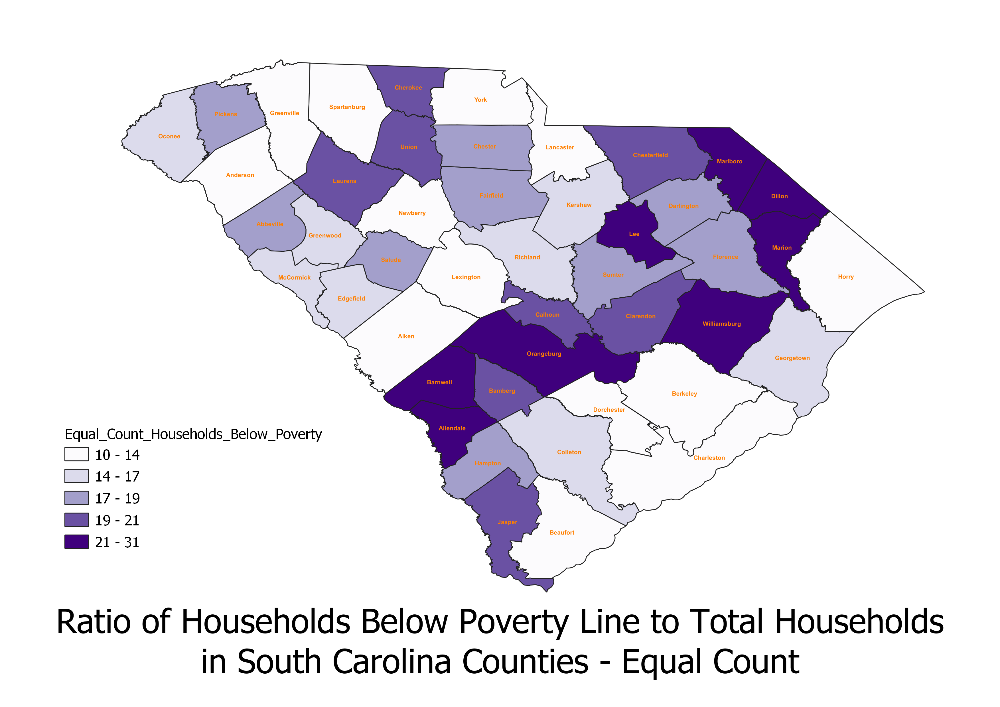
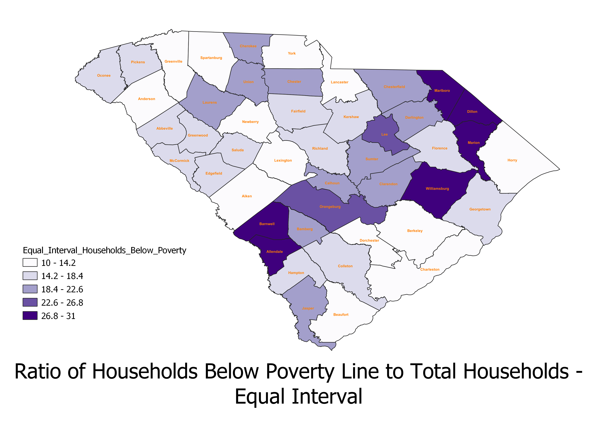
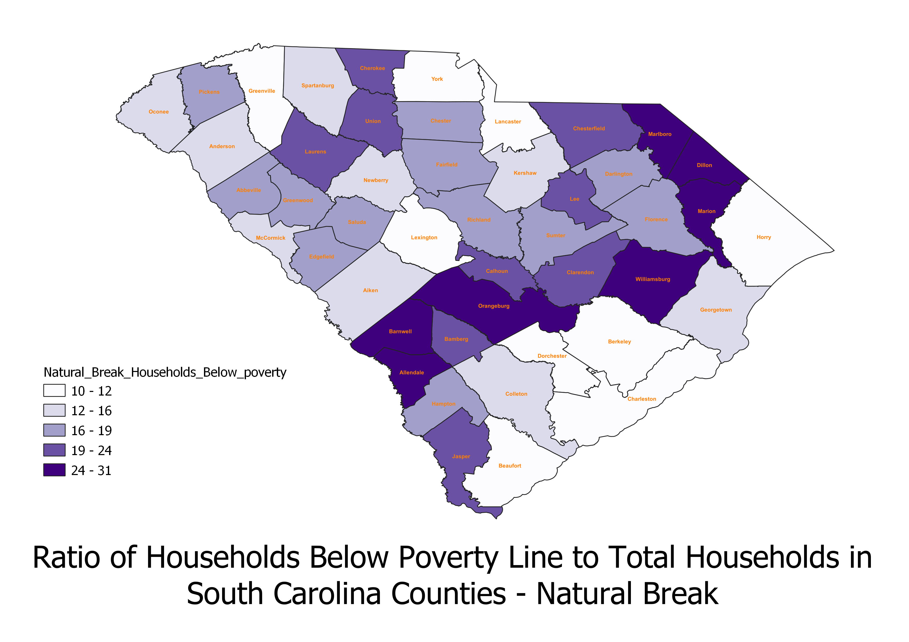

Homework 6 Part 2: Different Types of Choropleths
Stephanie Hall
The ratio I did was the number of households below the poverty line to the total number of households in all South Carolina counties. By dividing impoverished households by the total number of households, I eliminate the risk of the raw count of impoverished households creating a misleading picture based on population alone. On my maps, the darker saturation shows higher ratios of impoverished households to total households (meaning more poverty in these areas) and the lighter saturation shows lower ratios. I chose this ratio because I wanted to see if there was a higher ratio of impoverished households to total households on the outskirts of big population centers (Greenville, Spartanburg, Richland, Lexington, Horry, Berkeley, and Charleston) rather than the big population centers themselves. At the bottom of this pdf, I included a map (not my own) of population density in SC counties, and you can see that the color saturation is inverse to my own maps. This comparison demonstrates how there is a higher ratio of impoverished households to total households on the outskirts of big population centers.

Pros:You can compare chunks to each other.
Good for comparing above or below a median.
Cons: You can’t represent skewed data very well.
There’s a big jump from the darkest color to the second darkest in the ratio, but this is not represented graphically.
Difficult to see clusters.

Pros: You can represent skewed data really well.
Shows clusters well.
Cons: If most of your data is within one equal interval, you cannot differentiate that data.
This seems to be a big problem for my data here.
Some intervals may not be represented by your data.
This doesn’t seem to be a problem here, but we do have a lot more data in some intervals than others.

Pros: Allows you to see clusters.
Represents skewed data.
Takes into account the faults of the other two choropleths and corrects them.
Cons: There may be a better option on a case-by-case basis.
May not be best choice for really large data sets with no jumps in high means.
Data used for this project
CSV dataset
Link to Census Data